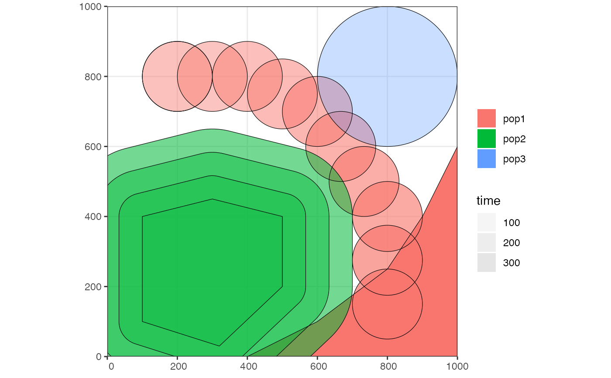

Defines the parameters of a population (non-spatial and spatial).
population( name, time, N, parent = "ancestor", map = FALSE, center = NULL, radius = NULL, polygon = NULL, remove = NULL, intersect = TRUE, competition_dist = NA, mate_dist = NA, dispersal_dist = NA, dispersal_fun = NULL, aquatic = FALSE )
Arguments
| name | Name of the population |
|---|---|
| time | Time of the population's first appearance |
| N | Number of individuals at the time of first appearance |
| parent | Parent population object or "ancestor" (indicating that the population does not have an ancestor, and that it is the first population in its "lineage") |
| map | Object of the type |
| center | Two-dimensional vector specifying the center of the circular range |
| radius | Radius of the circular range |
| polygon | List of vector pairs, defining corners of the polygon range or
a geographic region of the class |
| remove | Time at which the population should be removed |
| intersect | Intersect the population's boundaries with landscape features? |
| competition_dist, mate_dist | Maximum spatial competition and mating choice distance |
| dispersal_dist | Standard deviation of the normal distribution of the distance that offspring disperses from its parent |
| dispersal_fun | Distribution function governing the dispersal of offspring. One of "normal", "uniform", "cauchy", or "exponential". |
| aquatic | Is the species aquatic ( |
Value
Object of the class slendr_pop
Details
There are four ways to specify a spatial boundary: i) circular range
specified using a center coordinate and a radisu, ii) polygon specified as a
list of two-dimensional vector coordinates, iii) polygon as in ii), but
defined (and named) using the region function, iv) with just a world
map specified (circular or polygon range parameters set to the default
NULL value), the population will be allowed to occupy the entire
landscape.
Examples
# spatial definitions ----------------------------------------------------- # create a blank abstract world 1000x1000 distance units in size map <- world(xrange = c(0, 1000), yrange = c(0, 1000), landscape = "blank") # all slendr objects can be visualised with a generic function plot() plot(map)# create a circular population with the center of a population boundary at # [200, 800] and a radius of 100 distance units, 1000 individuals at time 1 # occupying a map just specified pop1 <- population("pop1", N = 1000, time = 1, map = map, center = c(200, 800), radius = 100) # printing a population object to a console shows a brief summary pop1#> slendr 'population' object #> -------------------------- #> name: pop1 #> habitat: terrestrial #> #> number of spatial maps: 1 #> map: abstract spatial landscape with custom features #> stays until the end of the simulation #> #> population history overview: #> - time 1: created as an ancestral population# create another population occupying a polygon range, splitting from pop1 # at a given time point (note that specifying a map is not necessary because # it is "inherited" from the parent) pop2 <- population("pop2", N = 100, time = 50, parent = pop1, polygon = list(c(100, 100), c(320, 30), c(500, 200), c(500, 400), c(300, 450), c(100, 400))) pop3 <- population("pop3", N = 200, time = 80, parent = pop2, center = c(800, 800), radius = 200) # move "pop1" to another location along a specified trajectory and saved the # resulting object to the same variable (the number of intermediate spatial # snapshots can be also determined automatically by leaving out the # `snapshots = ` argument) pop1_moved <- move(pop1, start = 100, end = 200, snapshots = 10, trajectory = list(c(600, 820), c(800, 400), c(800, 150))) pop1_moved#> slendr 'population' object #> -------------------------- #> name: pop1 #> habitat: terrestrial #> #> number of spatial maps: 14 #> map: abstract spatial landscape with custom features #> stays until the end of the simulation #> #> population history overview: #> - time 1: created as an ancestral population #> - time 100-200: movement across a landscape# many slendr functions are pipe-friendly, making it possible to construct # pipelines which construct entire history of a population pop1 <- population("pop1", N = 1000, time = 1, map = map, center = c(200, 800), radius = 100) %>% move(start = 100, end = 200, snapshots = 10, trajectory = list(c(400, 800), c(600, 700), c(800, 400), c(800, 150))) # a population boundary at a given time can be "manually" created by calling # the function boundary() -- here we extend the pipeline from the previous # command to set the final spatial map of pop1 to another polygon pop1 <- population( "pop1", N = 1000, time = 1, map = map, center = c(200, 800), radius = 100 ) %>% move( start = 100, end = 200, snapshots = 10, trajectory = list(c(400, 800), c(600, 700), c(800, 400), c(800, 150)) ) %>% boundary(time = 300, polygon = list( c(400, 0), c(1000, 0), c(1000, 600), c(900, 400), c(800, 250), c(600, 100), c(500, 50)) ) # spatial boundaries can be plotted with a function plot() plot(pop1)# population ranges can expand by a given distance in all directions pop2 <- expand(pop2, by = 200, start = 50, end = 150, snapshots = 10) # we can check the positions of all populations interactively by plotting their # ranges together on a single map plot(pop1, pop2, pop3)# gene flow events -------------------------------------------------------- # individual gene flow events can be saved to a list gf <- list( geneflow(from = pop1, to = pop3, start = 150, end = 200, rate = 0.15), geneflow(from = pop1, to = pop2, start = 300, end = 330, rate = 0.25) ) # compilation ------------------------------------------------------------- # location where to save slendr model configuration files model_dir <- paste0(tempdir(), "_slendr_model") # compile model components in a serialized form to dist, returning a single # slendr model object (in practice, the resolution should be smaller) model <- compile( populations = list(pop1, pop2, pop3), generation_time = 1, dir = model_dir, overwrite = TRUE, resolution = 10, sim_length = 500, competition_dist = 5, mate_dist = 5, dispersal_dist = 1 ) # serialized models can be read from disk to their R representation again loaded_model <- read(model_dir) # clean up the model directory unlink(model_dir, recursive = TRUE, force = TRUE)